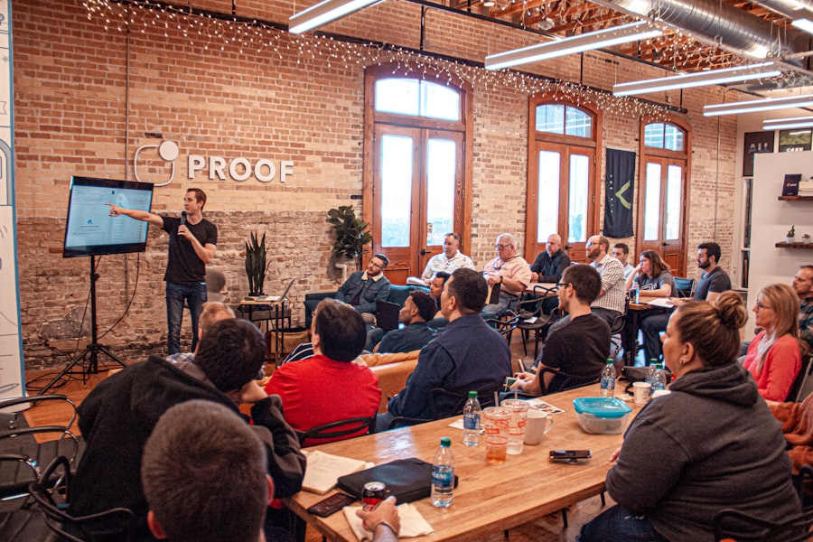

染颜料事业部
AI 小组

目录

2CONTENTS
卷首寄语
AI 不是远方的风口，是工位上每天能省下来的一小时。
- 为什么事业部现在必须用 AI
- AI 小组要推广什么
- 这本周刊怎么读、怎么用
AI 已经不是可选项
同一条产线、同一份报告、同一场例会，谁先把重复劳动交给工具，谁就能把时间还给现场和客户。染颜料事业部要做的，不是追新名词，而是让 AI 成为工位习惯。
AI 小组办这本周刊，就是为了把「能用、敢用、会用」推到每个人手里：讲清为什么重要，拆开怎么上手，记下谁先跑通。
我们相信，AI 不会替代判断、安全和承诺，但会替代翻文件夹、对齐格式、写第一稿这类消耗。省下来的时间，应该用在走现场、核数据、拍板上。
欢迎把试用记录、提示词模板、踩坑笔记投给 AI 小组。优秀内容，优先进入下期。
人物专访
把重复劳动交给工具，把拍板留在自己手里。
- 受访者：赵启年 · 运营管理部部长
- 三个固定场景，一套迭代方法
- 一线质量岗：骨架先行
「AI 不是替我决策，是替我抢回整块时间」
周刊：您是从什么时候开始把 AI 放进日常工作的？
赵启年：起初和很多人一样，偶尔用来润色邮件、整理会议纪要。真正觉得「值得持续投入」，是某次周例会前——三份经营分析材料要在两天内汇总，以往至少占去大半天做格式统一和表述对齐。那次我试着把各科室的原始数据（已脱敏）按固定模板交给助手出初稿，自己只做核对和结论调整，整体节省了近一半准备时间。
从那以后，我不再问「AI 能不能写得更漂亮」，而是问「这件事里，哪一段是重复劳动、哪一段必须我拍板」。前者交给工具，后者留给自己。
三个固定场景，和一套迭代方法
场景一：跨部门沟通材料。对外函件、对上汇报的初稿，先让 AI 按「背景—现状—诉求—下一步」生成骨架，再人工补数据和口径。赵启年强调：涉及客户承诺、交期、价格的句子，一律手改定稿。
场景二：周例会与月度复盘。把各线提交的要点粘贴进助手，要求「合并同类项、标出待决策项、列出需现场讨论的三件事」。他说这相当于多了一个「不会漏项的整理员」，但讨论顺序和拍板仍由他主持。
场景三：制度与流程问答。新人问「这个流程在哪份文件里」，他不再亲自翻文件夹，而是先查内部知识助手（试点中），定位原文后再回复。目的是让「找文件」不再占用管理岗时间。
迭代方法很简单：每次觉得「这次用得顺」，就把提示词和输入样例存进共享文档；不顺的，写一句「哪里不对」方便下次改。三个月下来，团队里已有七八个可复用模板。
一线试用者：质量部的「骨架先行」
林晓雯的用法更「窄」也更稳：只用在检测报告的结构起草。同类报告反复套格式、查历史表述，过去一份骨架往往要 40 分钟；现在按模板让助手生成章节框架与表述候选，她核对数据与结论后定稿，起草阶段压缩到约 12 分钟。
她的原则和赵启年一致：「草稿可以要，签字我来。」涉密配方、未公开客户信息从不进外部模型。她沉淀了三条提示词，已分享给同科室试用。
「它像个很勤快的实习生——不会替你做判定，但能把桌子收拾整齐，让你专心看数据。」

AI 科普
听懂三个词，再用起来才不发怵。
- MCP：模型怎么接工具和数据
- RAG：带着资料答题
- Agent：按流程办事的助手
MCP 是什么？和「接工具」有什么关系
MCP（Model Context Protocol，模型上下文协议）是一套开放标准，用来规定「大模型如何安全、统一地连接外部工具和数据源」。可以把它理解成 USB-C：以前每个 AI 产品接数据库、接企业系统，接口各搞一套；有了 MCP，工具提供方按同一套「插头」开发，模型侧按同一套「插座」接入。
对事业部同事来说，不必记协议细节，只需知道三点：
第一，MCP 解决的是「模型怎么读到最新、可用的信息」——例如制度库、工单系统、内部表格，而不是只靠训练时的旧知识。
第二，它强调权限与边界，哪些能读、哪些能写，由企业 IT 与业务一起配置，不是模型想连什么就连什么。
第三，市面上听到的「AI 接飞书 / 接数据库 / 接知识库」，很多就是在 MCP 或类似思路上做的集成。我们试点中的文档助手、场景池，未来也可能通过标准接口扩展能力。
RAG 与 Agent：两个常一起出现的词
RAG（检索增强生成）：先在你的文档库里「检索」相关段落，再让模型「生成」回答。适合制度问答、SOP 查询、历史报告表述参考。好处是回答有据可查；前提是文档要整理好、权限要控好。
Agent（智能体）：在「会聊天」之外，还能按步骤调用工具——例如先查表、再写邮件、再创建待办。适合多步骤、有规则的任务，但仍需人工设定边界和复核关键节点。
简单记：RAG 像「带着资料答题」；Agent 像「会按流程办事的助手」。多数事业部场景，从 RAG 类「查得到、答有据」起步更稳；Agent 类自动化放在有明确 SOP、可回滚的流程上试点。
无论哪种，都绕不开三条红线：脱敏输入、人工复核对外输出、涉密配方与未公开合同不进外部模型。
大模型三问（给非算法同事）
它会什么？归纳文字、改写润色、按模板起草、对照清单查漏、把口语整理成条理清晰的说明。适合「有样例、有规则、可核验」的信息工作。
它不会什么？不自动保证事实正确，不懂你们釜里的真实工况，不能替代安全规程与合规审批，也不能替你在合同上签字。
怎么用才安全？脱敏 → 说清角色与输出格式 → 要依据或要步骤 → 人工复核 → 好的提示词沉淀下来。好用法 = 清晰任务 + 可核验结果 + 人负责最终决策。

事业部案例
内部先跑通，再写成别人能照着做的清单。
- 运营管理：例会材料与跨部门函件
- 质量管理：报告骨架先行
- 可复制，才算真正落地
案例一：运营管理的 AI 闭环
以下根据运营管理部赵启年近三个月的试用整理，为示例化叙述，数据为内部估算，供兄弟科室参考复制思路。
背景。事业部日常需同步生产、质量、供应链、客户等多线信息。以往周例会材料分散在邮件、表格和口头反馈里，汇总耗时长，且容易遗漏「待决策项」。
做法。建立「原始要点 → AI 结构化 → 人工定稿 → 会后沉淀」四步：各线按统一格式提交 5 条以内要点；助手合并同类项并标红待决策项；例会前 30 分钟只做核对与排序；会后把定稿结论与提示词版本存入共享库。
迭代。第一版提示词过于笼统，输出冗长；第二版增加「最多三页、必须列出待决策项」；第三版加入「区分事实与建议，建议单独成段」。每版保留样例输入输出，方便他人套用。
案例一（续）：效果与可复制清单
效果（估算）。周例会材料准备时间从平均约 4 小时降至约 2 小时；跨部门函件初稿从「从零写」变为「改骨架」，单份节省 20～40 分钟。更重要的变化是：管理者把省下的时间用在现场走线和拍板上，而不是埋在格式里。
可复制清单。① 统一输入格式（科室、事项、数据、诉求）；② 固定输出模板（背景、现状、待决策、建议）；③ 共享提示词版本库；④ 红线培训（什么不能粘贴进模型）；⑤ 每月一次「顺/不顺」复盘，只改一条。
AI 小组正在把该流程整理成「管理者场景卡」，欢迎其他科室在此基础上改成自己的版本。
案例二：质量报告起草 · 骨架先行
质量管理部林晓雯的实践，代表「一线窄场景、深使用」路径：不追求一步到位全流程智能，只把最痛、最重复的一段交给 AI。
她梳理了同类检测报告的章节结构、常用表述与必查项清单，写成三条提示词：一类用于「框架生成」，一类用于「表述润色」，一类用于「对照必查项查漏」。每次使用前，只粘贴已脱敏的检测数据与结论要点，生成后再逐条核对原始记录。
科室内部小范围试用后，起草阶段平均耗时下降约 70%（自估），发出前仍 100% 人工复核。下一步计划：把必查项清单与提示词绑定，减少漏项。
该案例已纳入 AI 小组「场景池」，优先级：可复制到其他需大量同类报告的岗位。
行业标杆
外面怎么做，我们先抄能抄的三步。
- 质量视觉 · 供应链预警
- 制度知识助手
- 有对比、有清单，才进周刊
化工与制造领域：三类常见落地方向
质量视觉。部分材料与化工企业用视觉模型辅助识别包装破损、标签错误、色差异常，把「全检靠眼」变成「机器初筛 + 人工复判」，降低漏检与疲劳误判。落地关键：样本积累、误报率可接受、复判流程清晰。
供应链与计划。结合历史订单、交期与异常事件做短期预测与预警，帮助计划岗更早发现「可能断供 / 可能积压」信号。落地关键：数据质量、与现有 ERP/计划系统衔接，避免「预警多了没人看」。
工艺与制度知识助手。把 SOP、制度、培训材料做成可检索知识库，新人问「这一步注意事项是什么」能定位原文；写报告时可引用条款，减少翻文件夹时间。落地关键：文档更新机制、权限分级、回答必须带出处。
对标启示：我们能先抄哪几步
外部案例未必能原样照搬，但有三步值得直接借鉴：
第一步，先选「文案与知识检索」类低风险场景，而不是一上来做全流程自动化。与赵启年、林晓雯的路径一致：窄场景、深使用、可复盘。
第二步，每例必须有前后对比与可复制清单——谁在用、输入什么、输出什么、谁复核、省了什么。没有对比，就不进周刊、不进推广手册。
第三步，成功一个，写成场景卡，在兄弟科室推广；失败一个，也要写「为什么不行」，避免重复踩坑。
下期周刊继续征集：你在现场用 AI 解决了哪一件「每周重复 ≥3 次」的事？投稿请联系 AI 小组。

下一周，把 AI 写进工位习惯
AI 周刊不生产概念，只收集「用起来了」的证据。